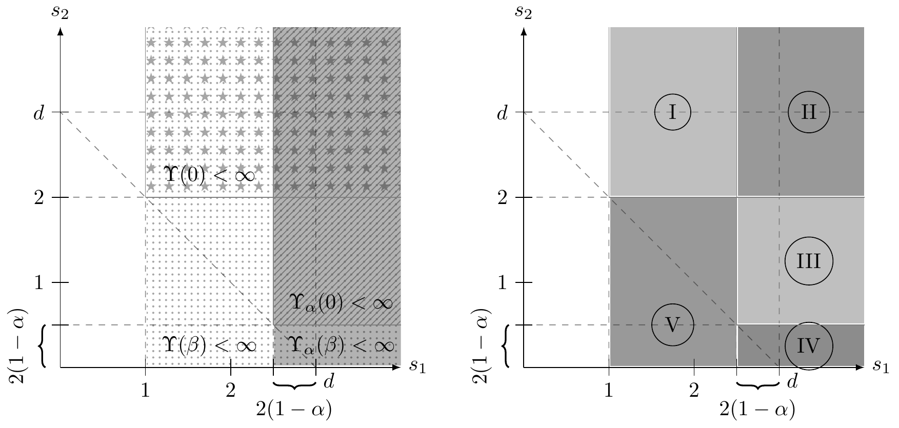

A Class of $d$-Dimensional Directed Polymers
in a Gaussian Environment
Le Chen (Auburn University)
Joint work with Cheng Ouyang (UIC), Samy Tindel (Purdue), Panqiu Xia (Purdue)
Celebrating Probability and Stochastics at EPFL
— retirement conference for
Robert Dalang and Thomas Mountford —
Lausanne, April 13–15, 2026
Dedicated to Robert Dalang, who gave the two gifts behind this work,
and to Thomas Mountford, who taught me probability.
The Team

Cheng Ouyang (UIC) · Samy Tindel (Purdue) · Le Chen (Auburn) · Panqiu Xia (Cardiff)
Classical Directed Polymer
Random walk weighted by a random environment
- Walk: simple random walk $S = (S_n)_{n=0,1,\ldots,N}$ on $\mathbb{Z}^d$, $S_0 = 0$; law $\mathbb{P}_0$.
- Environment: i.i.d. random variables $\{\xi(n,x) : n \ge 1,\,x \in \mathbb{Z}^d\}$, centered, mean-zero.
Partition function and quenched polymer measure:
$$Z_N(\beta) \;=\; \mathbb{E}_0\!\left[\exp\!\left( \beta\!\sum_{n=1}^N \xi(n, S_n)\right)\right],$$ $$\mathbb{P}_N^{\beta,\xi}(\mathrm{d}S) \;=\; \frac{1}{Z_N(\beta)}\, \exp\!\left(\beta\!\sum_{n=1}^N \xi(n, S_n)\right) \mathbb{P}_0(\mathrm{d}S).$$Huse & Henley '85 (physics) · Imbrie & Spencer '88 (math) — the subject begins here.
Our question: can this be defined in continuous space-time?
The Challenge
From a discrete sum to a continuum integral against $\dot W$
Discrete polymer
$$Z_N(\beta) = \mathbb{E}_0\!\left[\exp\!\left(\beta\!\sum_{n=1}^N \xi(n, S_n)\right)\right]$$
Noise $\xi$ is i.i.d. — just sum and exponentiate.
Continuous polymer?
$$\mathcal{Z}(s,y;\,t,x;\,\beta) \stackrel{?}{=} \mathbb{E}_y\!\left[\delta_x(X_t)\, \exp\!\left(\beta\!\int_s^t \dot{W}(r, X_r)\,\mathrm{d}r\right)\right]$$
Formal Feynman–Kac with $\delta_y$ IC, endpoint pinned at $x$. But $\dot W$ is a distribution — the integral makes no sense.
The classical Feynman–Kac representation breaks down
when both the initial data and the noise are too rough.
Gift I: Dalang's condition
Centered Gaussian Noise
Homogeneous in space · $f$ nonnegative & nonnegative-definite
White in time · Martingale theory (Itô · Walsh · Dalang · C. …) · Nonlinear SPDE $b(u)$
Why spatially colored noise?
Function-valued SPDEs, universality, and physical models
- Function-valued solution instead of singular SPDEs.
- Universality depends on spatial dimension $d$ and the structure of the noise.
-
Medina, Hwa & Kardar '89:
- Random walk in a turbulent flow
- Directed polymer: impurities interacting with the interface; anticorrelated impurities.
- Surface growth with charged ions: interacting via long-range Coulomb force.
Random walk in a turbulent flow
Medina, Hwa & Kardar '89
Great Red Spot, Voyager I (1979) · Wikipedia
Classical vs. Singular SPDEs
From smooth solutions to renormalization
Image: Le Chen / OpenAI Sora
The Regularity Barrier
Classical SPDEs vs. Singular SPDEs
Image: Le Chen / Nano Banana Pro
Gift II: Rough Initial Data
L. Chen & R. Dalang, Moments and growth indices for the nonlinear SHE with rough initial conditions (thesis 2013, paper 2015)
Admissible initial data. A (signed) measure $\mu$ on $\mathbb{R}^d$ with
$\displaystyle \int_{\mathbb{R}^d}\! e^{-a|x|^2}\,|\mu|(\mathrm{d}x) < \infty \quad\text{for every } a > 0.$
Any measure whose tails decay faster than a Gaussian — including $\mu = \delta_y$.
The Dirac mass is admissible — and it is the key.
Point-to-Point Partition Field $\mathcal{Z}$
The SPDE gives rigorous meaning to the formal Feynman–Kac object
Recall (Challenge slide — ill-defined):
$\displaystyle \mathcal{Z}(s,y;\,t,x;\,\beta) \stackrel{?}{=} \mathbb{E}_y\!\left[\delta_x(X_t)\, \exp\!\left(\beta\!\int_s^t \dot W(r,X_r)\,\mathrm{d}r\right)\right].$
Rigorous construction. $\mathcal{Z}(s,y;\,t,x;\,\beta)$ is the (unique, Itô-renormalized) solution to
$$\Bigl(\tfrac{\partial}{\partial t} - \tfrac{1}{2}\Delta_x\Bigr)\,\mathcal{Z} \;=\; \beta\,\mathcal{Z}\,\dot W(t,x),$$with initial condition $\displaystyle \lim_{t\downarrow s}\mathcal{Z}(s,y;\,t,\cdot;\,\beta) = \color{#CCFF33}{\boldsymbol{\delta_y(\cdot)}}.$
The SPDE solution is the meaning of the formal expression above.
Structural Properties of $\mathcal{Z}$
Five properties that make it a genuine transition kernel
- Positivity: $\mathcal{Z}(s,y;\,t,x;\,\beta) > 0$ a.s.
- Centrality: $\mathbb{E}[\mathcal{Z}] = p_{t-s}(x-y)$ (the heat kernel)
- Stationarity: invariant under time-space shifts
- Chapman–Kolmogorov: $$\mathcal{Z}(s,y;\,t,x) = \int_{\mathbb{R}^d}\mathcal{Z}(s,y;\,r,z)\;\mathcal{Z}(r,z;\,t,x)\,\mathrm{d}z$$
- Independence: on disjoint time intervals
Exactly what's needed to build a path measure.
The Polymer Measure
Replacing the ill-defined Gibbs measure with a chain of SHE kernels
Formal Gibbs measure (ill-defined):
$\displaystyle \frac{\mathrm{d}\mathbb{P}_\beta^W}{\mathrm{d}\mathbb{P}_0}(X) \stackrel{?}{=} \frac{1}{Z_T}\, \exp\!\left(\beta\!\int_0^T \dot W(s, X_s)\,\mathrm{d}s\right).$
Quenched polymer measure (rigorous). For $0 = t_0 < t_1 < \cdots < t_k < t_{k+1} = 1$:
$$\mathbb{P}_\beta^W\!\left(X_{t_1}\!\in\!\mathrm{d}x_1,\ldots,X_{t_k}\!\in\!\mathrm{d}x_k\right)$$ $$ \;=\; \frac{\displaystyle\prod_{j=0}^{k}\mathcal{Z}(t_j,x_j;\,t_{j+1},x_{j+1};\,\beta)} {\mathcal{Z}(0,0;\,1,\ast;\,\beta)}\; \mathrm{d}x_1\cdots\mathrm{d}x_k$$The chain of SHE kernels is the rigorous meaning of the Gibbs measure.
Itô Renormalization
Mollify the noise, subtract the divergent counterterm, take the limit
Mollify the noise: $W^\varepsilon$ smooth in space.
The subtraction $\tfrac{\beta^2}{2}k_\varepsilon(0)$ filters out the divergence.
“Like weighing a feather on a scale that constantly adds a million pounds of random pressure.”
Take $\varepsilon \to 0$: converges to the SHE solution $\mathcal{Z}$.
Under the Microscope
Polymer paths have the same local geometry as Brownian motion
Theorem (Local path behavior). [C.–Ouyang–Tindel–Xia, '26+]
Under $\mathbb{P}_\beta^W$:
- Paths are $C^{1/2-\varepsilon}$ for every $\varepsilon > 0$.
- Quadratic variation: $\langle X \rangle_t = t\,I_d$.
Under the microscope, the polymer IS Brownian motion.
Same roughness · same quadratic variation · indistinguishable locally.
The Singularity Dichotomy
Theorem (Sharp criterion). [C.–Ouyang–Tindel–Xia, '26+]
$\displaystyle\widehat{f}(\mathbb{R}^d) = \infty$ $\Longleftrightarrow$ $\mathbb{P}_\beta^W \perp \mathbb{P}_0$ a.s.
$\displaystyle\widehat{f}(\mathbb{R}^d) < \infty$ $\Longleftrightarrow$ $\mathbb{P}_\beta^W \sim \mathbb{P}_0$ a.s.
The spectral mass alone decides everything.
What Does $\mathbb{P}_\beta^W \perp \mathbb{P}_0$ Mean?
There exists a set $A_W$ of paths such that:
- $\mathbb{P}_\beta^W(A_W) = 1$ — the polymer lives here
- $\mathbb{P}_0(A_W) = 0$ — Brownian motion never visits
“Two counterfeit paintings. Under a magnifying glass, the brushstrokes
look identical. But under UV light, one is made of completely different paint.”
How do we prove it?
Radon–Nikodym meets dyadic martingale meets Wiener chaos
1. Restrict to a dyadic skeleton of times.
2. Form the likelihood ratio $Y_n$ — a positive martingale.
3. Decompose $\log Y_n$ via Wiener chaos; read off a negative drift.
Spectral mass controls the drift $\Rightarrow$ $Y_n \to 0$ or $Y_n \to Y > 0$.
Trace-Class: Equivalence
When $\widehat{f}(\mathbb{R}^d) < \infty$, noise is evaluated along the path
A bona fide exponential martingale: positive, finite, $L^2$-bounded.
[Rovira & Tindel '05] · [Lacoin '11] · Comets '17 textbook
The two measures see the same paths — just with different probabilities.
Two Orthogonal Classifications
Dichotomy (measure-theoretic, just proved) · Weak / Strong disorder (fluctuation class, next)
|
Equivalent (trace-class) |
Singular (non-trace-class) |
|
|---|---|---|
|
Weak disorder
$d \ge 3$,
$\beta < \beta_0$, $\Upsilon(0) < \infty$ |
Classical CLT (Rovira–Tindel & extensions) |
CLT still holds! singular measures, Gaussian fluctuations |
|
Strong disorder
$d \le 2$ or
$\beta \ge \beta_0$ or $\Upsilon(0) = \infty$ |
Largely open (conjectural new universality) |
Largely open (conjectural new universality) |
Different questions — with a shared spectral input.
Why $d \ge 3$?
Pólya's theorem (1921) — recurrence vs. transience
🚶
$d \le 2$: Recurrent
“A drunk man will find his way home.”
Path keeps crossing its own trail —
trapped in the same mud forever.
🐦
$d \ge 3$: Transient
“A drunk bird may get lost forever.”
Enough spatial volume to escape —
entropy defeats energy.
Transience translates to $\displaystyle\int_0^\infty\! f(X_s - \widetilde{X}_s)\,\mathrm{d}s < \infty$ — preventing strong localization.
Weak Disorder Regime
$d \ge 3$ · $\beta < \beta_0$ · $\Upsilon(0) < \infty$ (slightly weaker than trace-class)
Theorem (Diffusive CLT). [C.–Ouyang–Tindel–Xia, '26+]
If $d \ge 3$, $\Upsilon(0) < \infty$, and $\beta < \beta_0 := \frac{1}{2\,\Upsilon(0)^{1/2}}$, then
$$\mathbb{E}_T^{\beta,W}\!\left[g\!\left(\frac{X_T}{\sqrt{T}}\right)\right] \;\xrightarrow[\;\text{in prob.}\;]{\;\;T\to\infty\;\;}\; \int g\,\mathrm{d}\nu, \quad \nu = N(0, I_d).$$The polymer forgets the environment and diffuses like free Brownian motion.
Subtlety: $\Upsilon(0) < \infty$ is not $\widehat f(\mathbb{R}^d) < \infty$ — the $1/|\xi|^2$ kernel tames some non-trace-class tails in $d \ge 3$.
Spectral Hierarchy
Which noise $f$ lands in which regime?
| Noise type $f$ | $\widehat{f}(\mathbb{R}^d)$ | Dalang? | Verdict |
|---|---|---|---|
| Space-time white ($d=1$) | $\infty$ | Yes | $\perp$ |
| Riesz kernel $|x|^{-\alpha}$ | $\infty$ | Yes if $\alpha < 2 \wedge d$ | $\perp$ |
| Bounded $L^1$ density | $< \infty$ | Yes | $\sim$ |
| Smooth compactly supp. | $< \infty$ | Yes | $\sim$ |
The boundary is precisely the trace-class property of the noise covariance.
A Hierarchy of Dalang's Condition
Three nested assumptions on the spectral measure $\widehat f$
Dalang's condition · $\displaystyle \Upsilon(\beta) = (2\pi)^{-d}\!\int\! \frac{\widehat f(\mathrm{d}\xi)}{\beta + |\xi|^2} < \infty$ for some $\beta>0$
$\Rightarrow$ SHE solution exists in every dimension.
$\Upsilon(0) < \infty$ · $\displaystyle \int\!\frac{\widehat f(\mathrm{d}\xi)}{|\xi|^2} < \infty$
$\Rightarrow$ Diffusive CLT in $d \ge 3$ (the $1/|\xi|^2$ kernel tames some non-trace-class tails).
Trace-class · $\displaystyle \widehat f(\mathbb{R}^d) < \infty$
$\Rightarrow$ The Singularity Dichotomy holds as stated.
Trace-class $\subset$ $\{\Upsilon(0)<\infty\}$ (in $d\ge 3$) $\subset$ Dalang
Bessel-type Correlation Kernels
Spectral-condition regions in $(s_1, s_2)$-parameter space

For Bessel & related kernels with two parameters $(s_1, s_2)$, the hierarchy of Dalang-type conditions $\Upsilon(\beta), \Upsilon_\alpha(\beta), \Upsilon(0), \Upsilon_\alpha(0)$ carves the plane into nested regions.
$s_1$ tunes the blow-up at zero; $s_2$ tunes the fatness of tail decay. Two knobs $\Rightarrow$ finer-grained noise taxonomy.
[Chen & Eisenberg '22, J. Theor. Probab.]
The Open Mystery
We can prove $\mathbb{P}_\beta^W \perp \mathbb{P}_0$ with mathematical certainty.
But we do not know what about the path gives it away.
The discriminating set $A_W$ exists — but no explicit description is known.
“The imposter is there. We just can't describe it.”
Strong Disorder Regime
Any of the CLT hypotheses fails: $\beta \ge \beta_0$ · $d \le 2$ · $\Upsilon(0) = \infty$
Path behavior: the polymer localizes.
- Concentrates on favored corridors of the environment.
- Endpoint distribution: non-Gaussian, largely unknown.
Free-energy fluctuations: a new universality class, parametrized by the spectral data of $f$ — yet to be discovered.
- trace-class ⇒ Gaussian (Edwards–Wilkinson)?
- non-trace-class ⇒ Variants of Tracy–Widom / KPZ in $d=1$?
- critical decay ⇒ New crossover laws?
A 25-Year Arc
From Dalang's 1999 condition to today's theorem
| 1999 | Dalang's condition — spectral threshold for SHE/SPDE |
| 2013 | Chen–Dalang: rough IC for SHE in $d=1$ (thesis work) |
| 2014 | Alberts–Khanin–Quastel: continuum polymer in $d=1$ |
| 2019 | Chen–Kim/Huang: rough IC for SHE for $d \ge 1$ under Dalang's condition |
| 2026 | Chen–Ouyang–Tindel–Xia: $d$-dimensional polymers — the full story |


PhD diploma 04/19/1013 & farewell lunch — EPFL, 2013
Thank you, Robert.
For taking a chance on me at the very start.
For introducing me to the field.
For discovering the rough initial data together.
For showing me what a mathematician can be —
meticulous, generous, upright.
For everything.
“Two gifts, two decades, one theorem.”
References
[1] R. Dalang, Extending martingale measure stochastic integrals..., Electron. J. Probab. (1999)
[2] L. Chen & R. Dalang, Moments and growth indices for the nonlinear SHE with rough initial conditions, Ann. Probab. (2015)
[3] T. Alberts, K. Khanin, J. Quastel, The continuum directed random polymer, J. Stat. Phys. (2014)
[4] L. Chen, C. Ouyang, S. Tindel, P. Xia, A class of $d$-dimensional directed polymers in a Gaussian environment, arXiv:2603.06574 (2026)
More references & podcasts: SPDEs-Bib
Acknowledgments
Supported by NSF DMS-CAREER No. 2443823 (2025–2030),
and Simons Foundation No. 959981 (2022–2027)